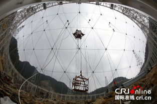
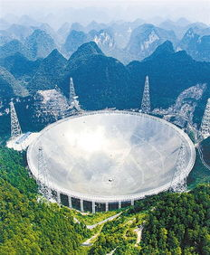
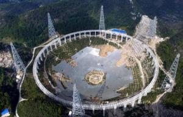

相关图片
- 
- 
索网结构是FAST主动反射面的主要支撑结构，是反射面主动变位工作的关键点。索网制造与安装工程也是500米口径球面射电望远镜工程的主要技术难点之一，其关键技术问题主要包括：超大跨度索网安装方案设计、超高疲劳性能钢索结构研制、超高精度索结构制造工艺等。而索网工程的顺利完成，意味着FAST工程已经在上述关键技术难点方面实现实质性突破。
1FAST索网结构直径500米，采用短程线网格划分，并采用间断设计方式，即主索之间通过节点断开。索网结构的一些关键指标远高于国内外相关领域的规范要求：例如，主索索段控制精度须达到1毫米以内，主索节点的位置精度须达到5毫米，索构件疲劳强度不得低于500MPa。整个索网共6670根主索、2225个主索节点及相同数量的下拉索。索网总重量约为1300余吨，主索截面一共有16种规格，截面积介于280—1319平方毫米之间。由于场地条件限制，全部索结构须在高空中进行拼装。
索网采取主动变位的独特工作方式, 即根据观测天体的方位，利用促动器控制下拉索，在500米口径反射面的不同区域形成直径为300米的抛物面，以实现天体观测。
FAST索网是世界上跨度最大、精度最高的索网结构，也是世界上第一个采用变位工作方式的索网体系。其技术难度不言而喻，需要攻克的技术难题贯穿索网的设计、制造及安装全过程。仅以高应力幅钢索研制为例，FAST工程对拉索疲劳性能的要求相当于规范规定值的2倍，国内外均没有可借鉴的经验或资料作为参考。其研制工作经历了反复的“失败—认识—修改—完善”过程，最终历时一年半时间才完成技术攻关。所取得的成果已经在国际专家评审会上得到国外专家组的认可，成功在FAST工程上得到应用。随着索网诸多技术难题的不断攻克，形成了12项自主创新性的专利成果，其中发明专利7项，这些成果对我国索结构工程水平起到了巨大的提升作用。